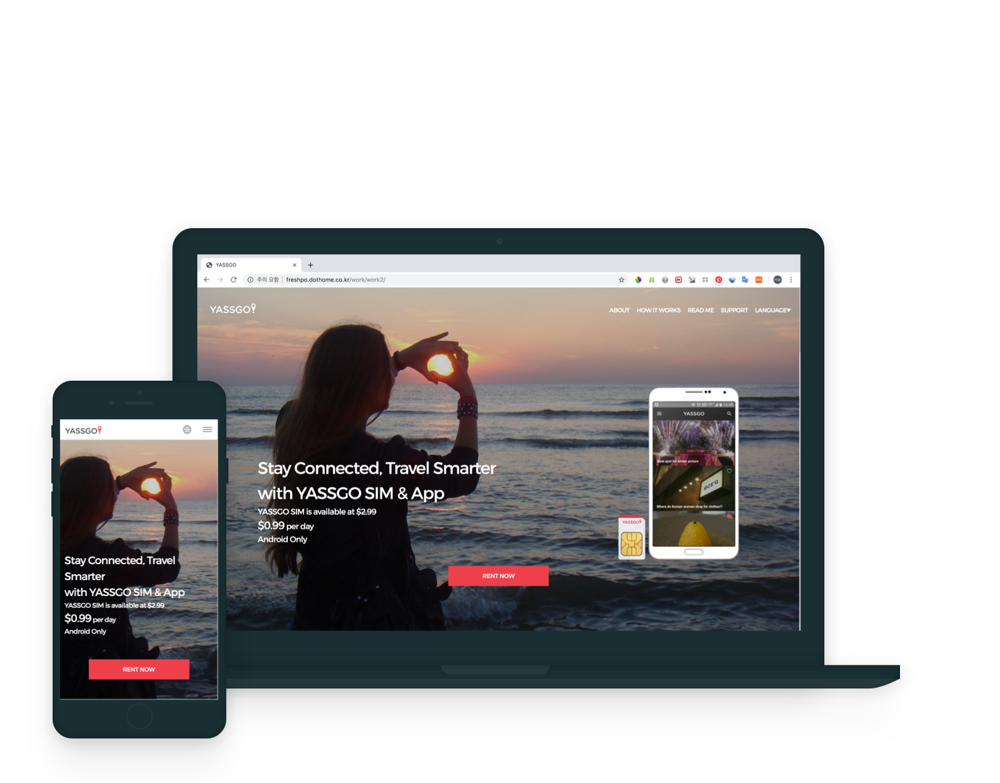

고객에게 신뢰를 주기 위해 정석적인 느낌으로 작업하는 것을 목표로 두었습니다.
외국인 여행객을 대상으로 하는 서비스 이기 때문에, 다양한 언어의 기본 폰트, 언어별로 다르게 구성되는 페이지 등 다국어 서비스를 중심으로 두고 작업을 하였습니다.
코드를 보았을 때에 규칙성을 빠르게 찾아갈 수 있도록 커스텀하게 작업하였습니다.
홈페이지 작업 외에도, 발송되는 이메일의 디자인, 퍼블리싱 작업 등 다양한 환경에서 구현해야 하는 퍼블리싱을 경험하였습니다.